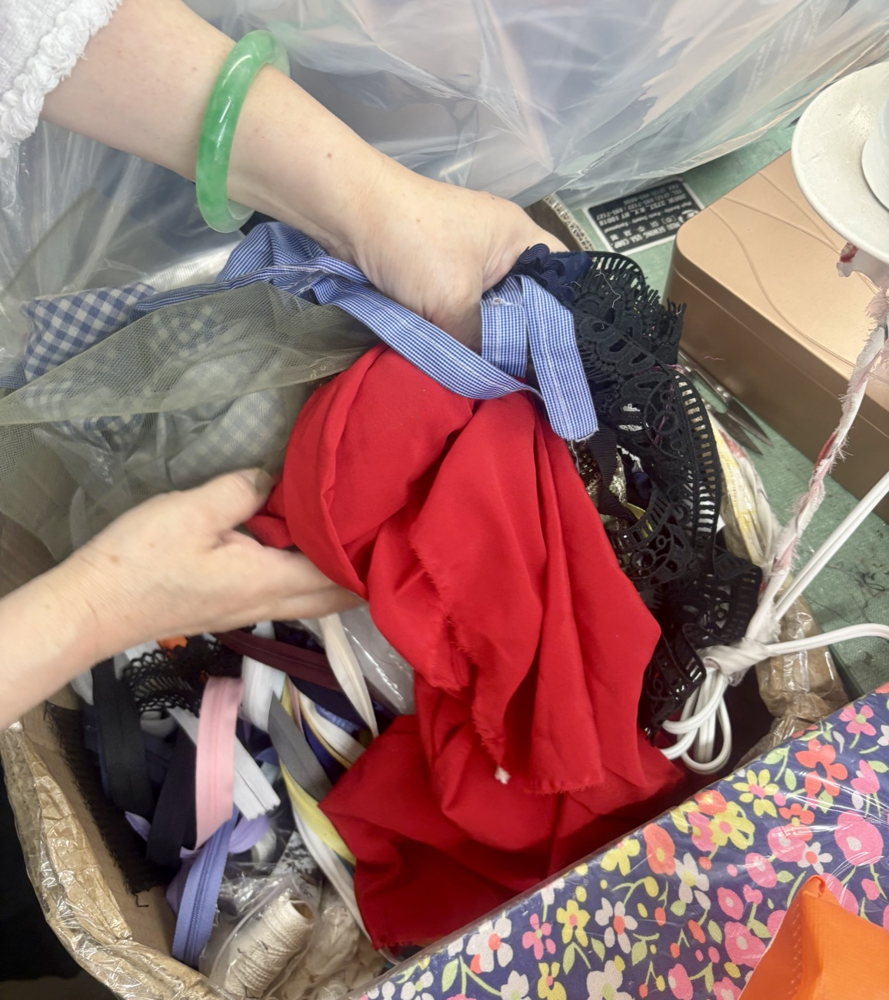
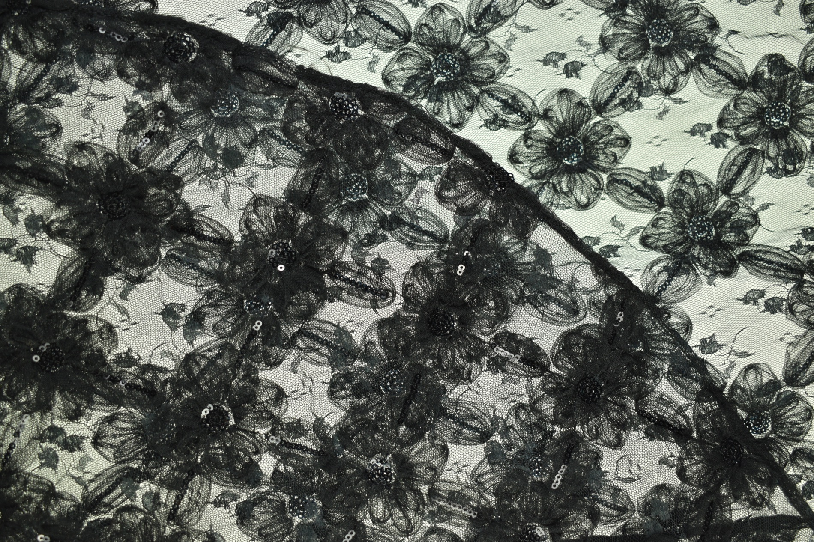
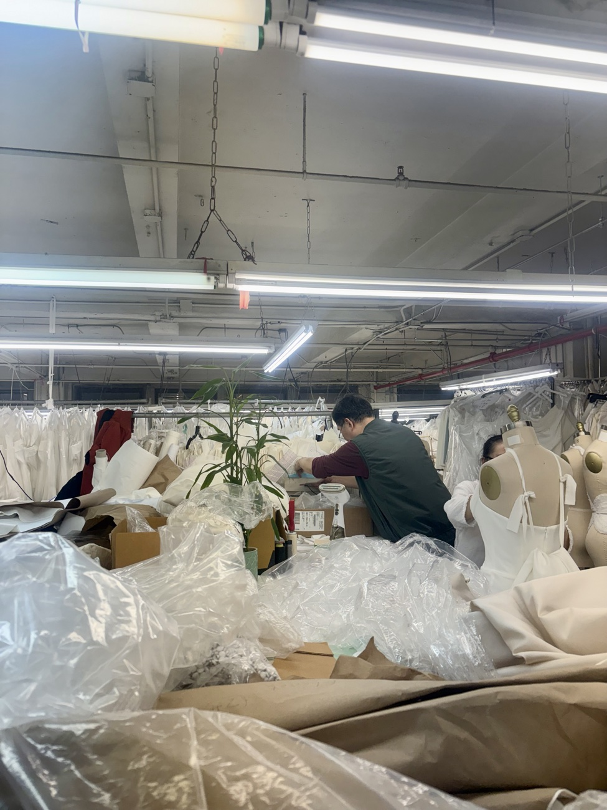
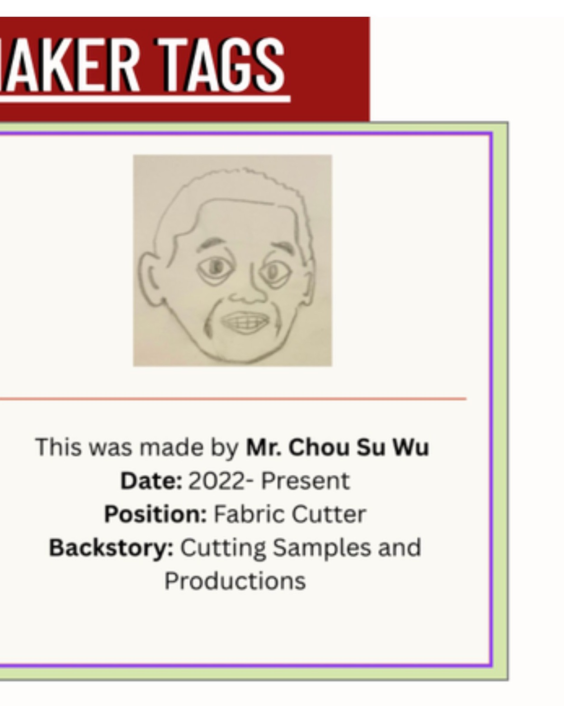
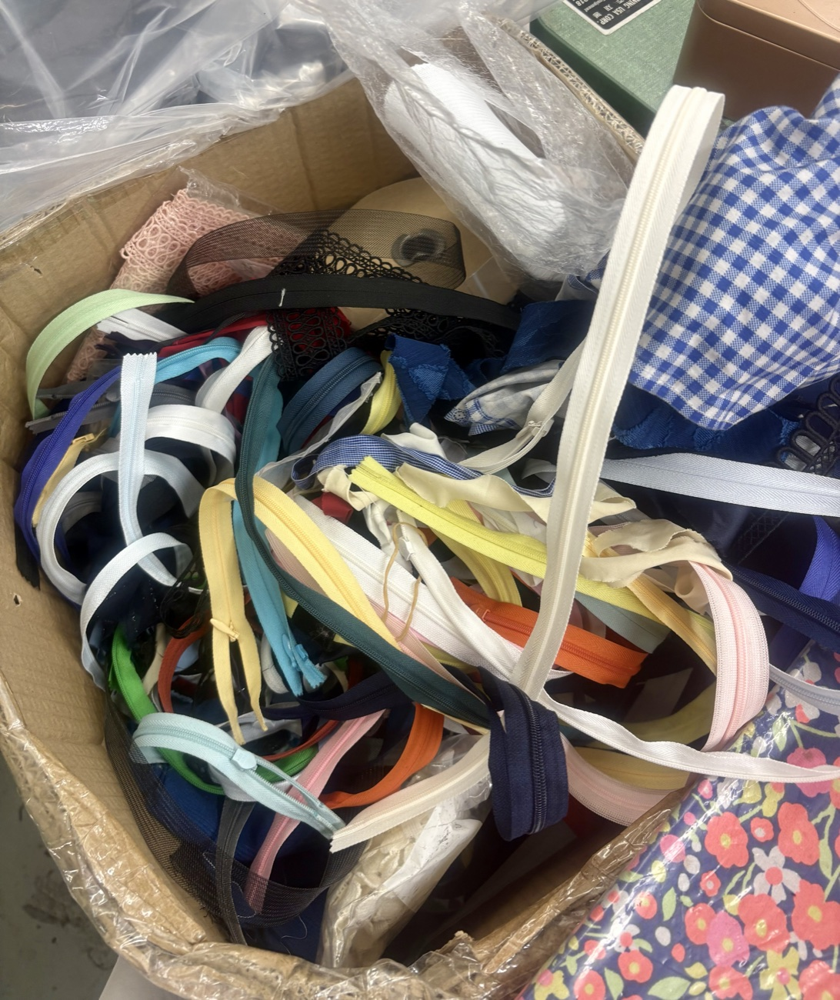
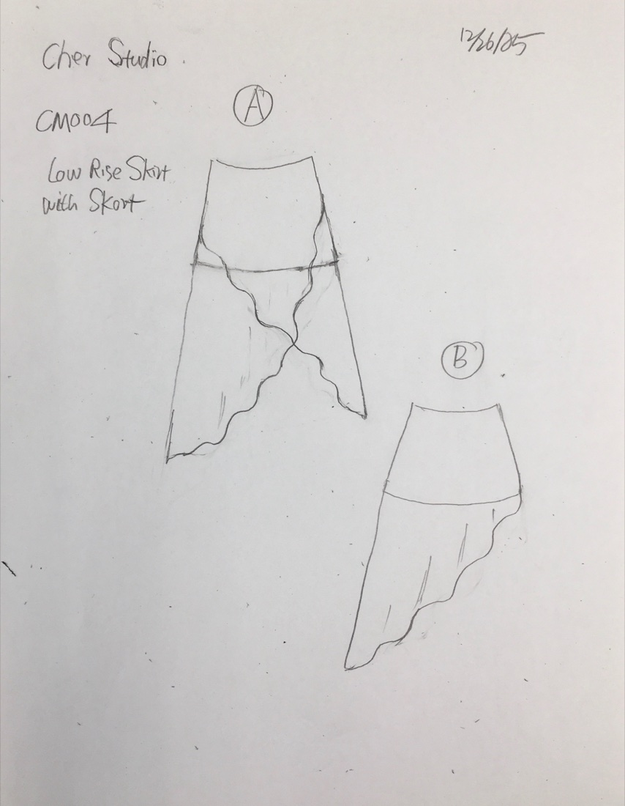
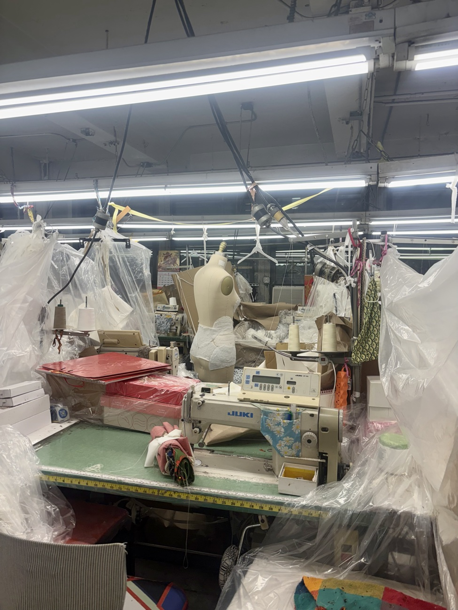
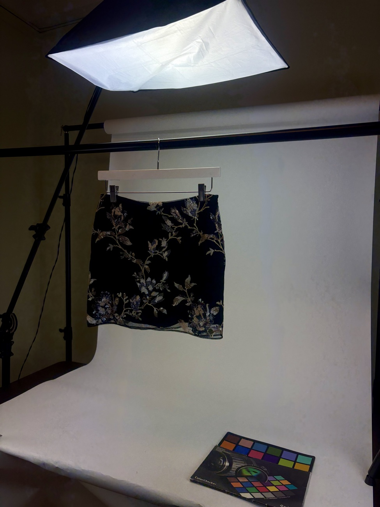
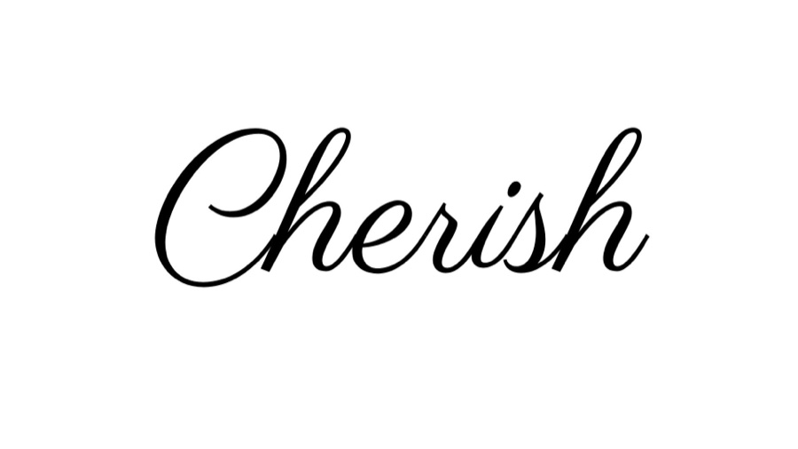

Sustainable
“Living” reusable designs. We rescue deadstock lace, trims and offcuts destined for landfill and build each piece around what we find.
Our Story
Cherish transforms deadstock and discarded textiles from New York's garment district into limited, one-of-a-kind pieces — designed around the fabric itself.

Rescued beaded lace · New York garment districtThe Designer
Founder & Designer
Cherish is a fashion initiative that aims to sustainably transform discarded fabric into unique garments — giving new life to materials that would otherwise end up in landfills.
In partnership with EC Studios, a small production company in Midtown Manhattan, I design a collection of tops, skirts and bags ethically sourced from NYC's garment industry. The design comes from the workable fabric itself — giving each material a second life through purposeful, creative, sustainable production.

“Living” reusable designs. We rescue deadstock lace, trims and offcuts destined for landfill and build each piece around what we find.

Local production in the NYC Garment District — high-quality, affordable, limited drops, cut and sewn a few blocks from where the fabric is found.

Every piece carries a maker tag naming who cut and sewed it — crediting the makers and building a real connection between hand and wearer.
Behind Each Piece
A closed production loop — swap the fabric, and every piece becomes one of one.




Manufacturing Transparency
Garment production in NYC has been dwindling toward overseas factories for decades. To help keep the craft — and the culture — in New York, every Cherish piece is made locally and openly, with its maker named on the tag.
EC Studios — Manhattan, NY
Why It Matters
tons of clothing discarded by New Yorkers every year.
of all US textile waste goes straight to landfill.
drop in NYC garment jobs over fifty years — roughly 50,000 lost.

For the extra sparkle in your day.
Shop the Collection